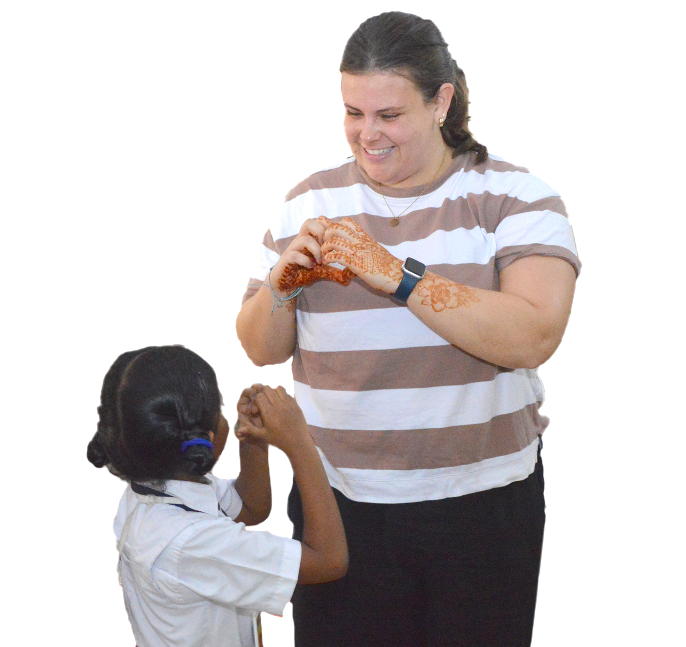

Volunteer
Volunteer with Aarti!
We would be delighted if you join us in our effort to make the world a fairer and more equal place. You can support girls and young women by donating your time and your skills.
Over the years we have hosted hundreds of volunteers from all over the world. In this win-win situation, the girls get excellent learning opportunities, the organisation gets support and infusion of fresh ideas, and the volunteers themselves gain perspective and valuable insight into the issues we are trying to tackle.
Our volunteers are always a part of the Aarti family. They often organise fundraisers to support the girls long after they have returned home.
📜 Volunteers who contribute either online or in person will be given a certificate of volunteering.

How to Help
Volunteering Modes
Option 1
🏠 In-Person
For over 21 years we have had student volunteers spending between a month to a year in Kadapa. Students from universities within India and abroad regularly spend summers with us helping in different ways — with day-to-day operations, by setting up systems, and by supporting large-scale projects that change attitudes towards girls and women.
Our German volunteers helped set up our pre-school from scratch in 2018. What will you build?
Option 2
💻 Online
Some of our supporters are based far away, but in this digital age they are able to conduct workshops to teach the vast array of skills that can be taught online — English conversation, coding, art, music, career guidance, and more.
Mention your preference and skills when you sign up to volunteer!
Volunteer Stories
Hear from our volunteers
Ready to make a difference?
You can now donate your time as well! We would be delighted if you join us in our effort to make the world a fairer and more equal place.
Register Now ↗